I picked up this instrument many years ago in non-working condition. At worst, I thought the indicator tubes would be salvageable and could make an interesting display for another project. However, the instrument seems to be almost working, with the exception of a single unilluminating tube. Finding documentation relating to this instrument has proved difficult, as the company now trades as Advance Electronics Ltd from Wrexham, but their business seems to no longer focus on test equipment. I'll ask if they have any documentation to add to that which I have collated here, but I doubt they will still have records from the late 1960s/70s.
Figure 1 shows the display issue. All elements of the surrounding ZM1172 indicator tubes were working. Either this tube had gone 'bad', or there was an issue with the driving circuity behind it. The image actually shows the instrument after partial disassembly which I will describe shortly.
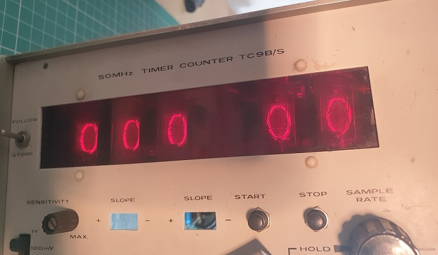Figure 1: TC9B/S with non-operational digit.
The top of the PCB really provides no opportunity to probe the display tube during operation. As such, it is necessary to attack the beast from below. Unfortunately, it is apparent that this instrument was not designed with ease of accesibility in mind. In order to access the bottom of the tubes, the lower input amplifier assembly to be removed, as shown in figure 2. In order for the lower input amplifier assembly to be removed, two BNCs (for input B and input C) must be desoldered and unscrewed, as well as the retaining nut for the RESET switch.
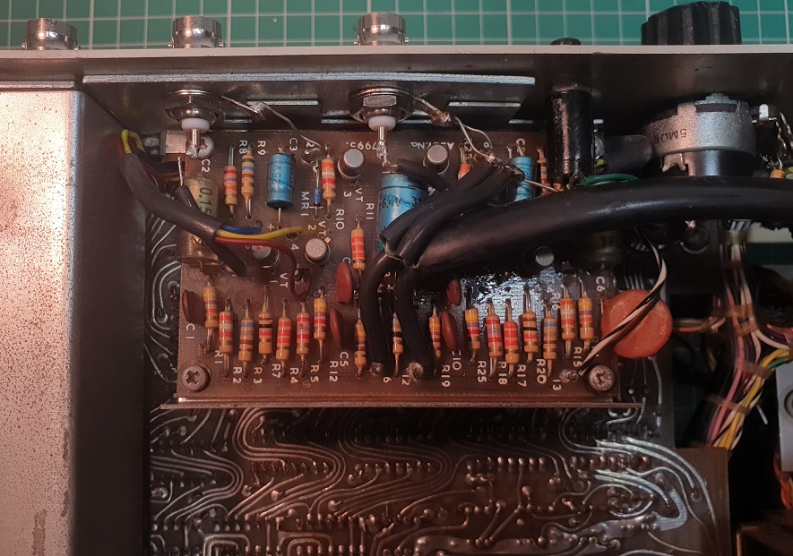Figure 2: Lower amplifier assembly of the TC9B/S.
The amplifier assembly can then be moved out of the way - fortunately the wiring loom is long enough to allow the amplifier assembly to be moved clear out of the way without complete removal from the instrument.
At this stage, I had clear access to the pins of the display tubes and associated driving circuitry - see figure 3. It is interesting to note the evidence of someone else trying to repair this - they have drawn a large green 'T' under the 6996079 display IC - more about this enigmatic part to follow...
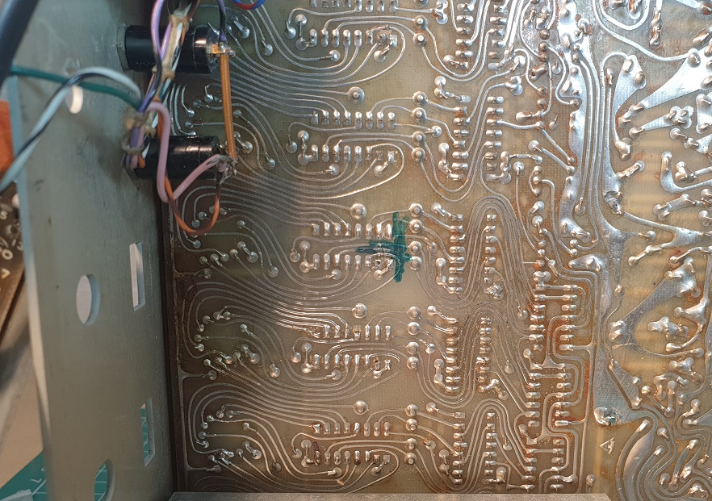Figure 3: Clear view of the display tubes and associated circuitry. Evidence of previous soldering and 'fixing' is evident.
I began probing the connections of the ZM1172 tubes. These are common anode, and each tube (including the non-illuminating) has the correct 200VDC on pin 1. Working backwards, I probed the outputs of the 6996079 ICs - these Fairchild devices, referred to in datasheets as CuL9960, are binary to decimal converters/drivers. The binary representation present on pins (MSD) 14,15,7,6 (LSD) then results in an appropriate pin being pulled LOW. As a result, the associated display element has a potential greater than the 170VDC minimum required for the ZM1172, and the digit lights. Figure 4 is an annotated version of Figure 3, indicating relevant pins.
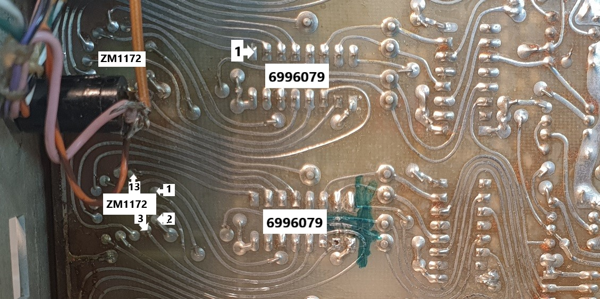Figure 4: Annotated view of Figure 3.
On working digits high output pins had a typical voltage of 40-70VDC, whilst the illuminated digit was at 0VDC. Good working was observed across a variety of digits on each operational tube. However, the non-functional digit showed 0V on all outputs. If each circuit element was working, then one would expect to see ALL digits within the tube illuminated. That is not the case.
As it stands, there are at least two possible failure modes. 1) The ZM1172 is broken and no elements light. Repair requires replacing the tube. 2) The 6996079 is broken and allows no current to flow, as a result no glow would be observed within the tube. A simple repair requires replacement of the IC, whilst a more-involved repair could involve designing a replacement circuit to emulate the behaviour of the 6996079. Today, there are no commercially available direct replacements for a tube-driving, binary to decimal converter. In the first instance, it is worth swapping a known-working 6996079 with the device under examination. I will see if I have any 16 pin DIL sockets to add after I desolder the IC - it should make future swapping/replacement trivial.
-----------------------------------------------------
A second 6996079 was desoldered and swapped with the IC from the non-illuminating tube. (Un)fortunately, the same digit (4th MSD) was still off - suggesting that the issue was most likely with the ZM1172. Figure 5 shows the view of the swapped 6996079s, with the faulty channel's 6996079 being marked with a white chalk dot.
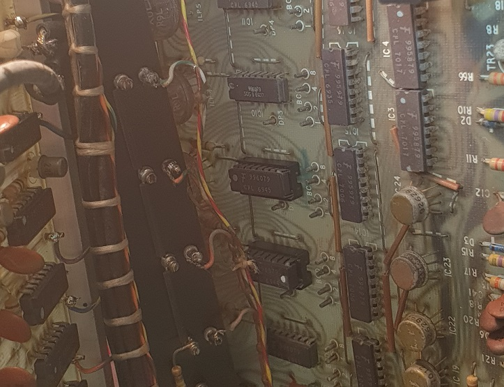Figure 5: View of the swapped 6996079 ICs in the newly installed sockets.
With that I removed the ZM1172 that was suspected to be at fault. Figures 6 and 7 show the ZM1172, interesting to note that pin 2, labelled as 'np' on the datasheet, is clipped short - not sure what the function of this is - it appears to be connected to the shiny metal plate on the rear of the device.
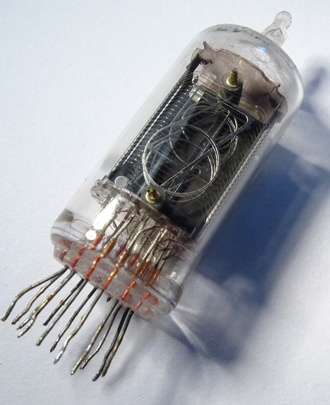Figure 6: ZM1172 front.
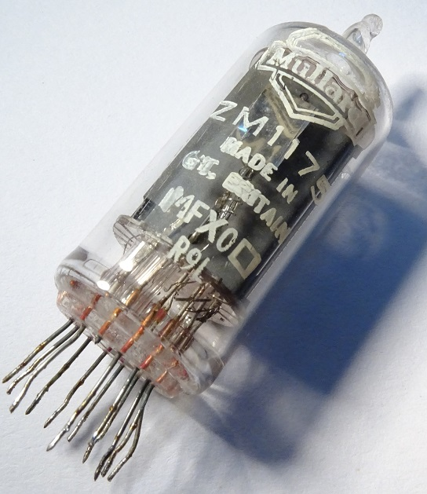Figure 7: ZM1172 rear.
With that, my next step is to test the ZM1172 out of circuit. I am planning to create a simple test circuit that can provide a >170VDC at around 2mA. I rather hope the ZM1172 isn't at fault (due to it being tricky/expensive to replace), but at least then the fault is determined.
-----------------------------------------------------
A long time since I posted an update... I initially planned to test the ZM1172 with my Brandenburgh Alpha IV Model 4607 high voltage supply, but it was encountering a fault whereby the voltage readout would remain at around 300VDC, despite the position of the voltage control knob - an external multimeter indicated that there was no output present which was worrying. In the meantime I constructed a suitable supply from an old variac (type E401BE/010), for which I made a neat standout of some 2mm steel sheet, primed and painted. Rubber feet were added to prevent scratching of my table or the steel. ⁀⊙෴☉⁀ The finished variac can be seen in Figure 8, along with a simple full bridge rectifier and smoothing capacitor.
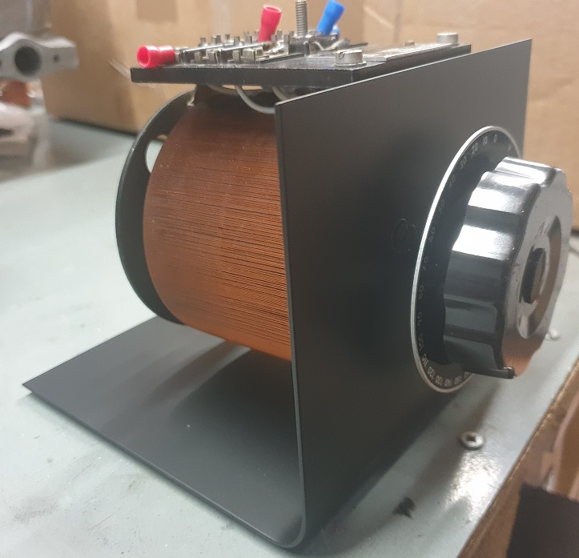Figure 8: The finished variac mount.
To verify operation without destroying my oscilloscope, I added an isolation transformer as per Figure 9. Not exactly safe but there we are.
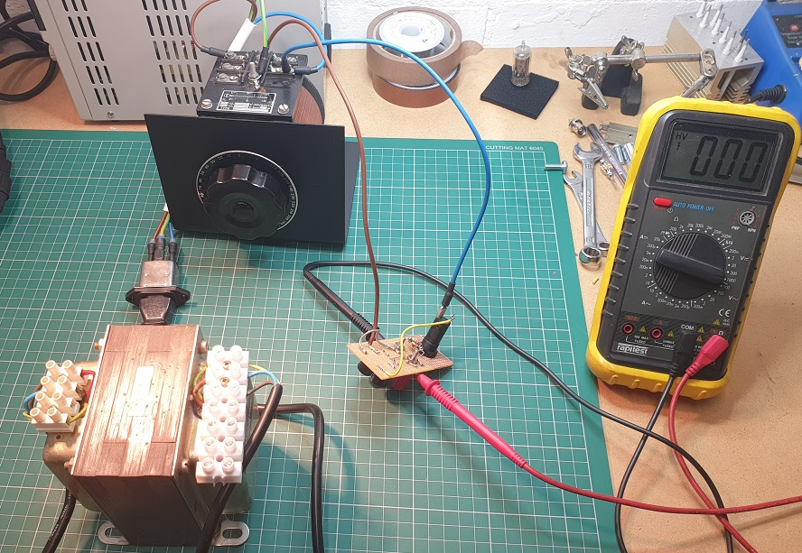Figure 9: HV test setup - multimeter is used to verify the rectified DC voltage across the current limiting resistor and ZM1172.
It was found that the ZM1172 was indeed at fault - it wouldn't light at all. It was at this point that my 4607 appeared to work again, so I made a HV cable, shown in Figure 10.
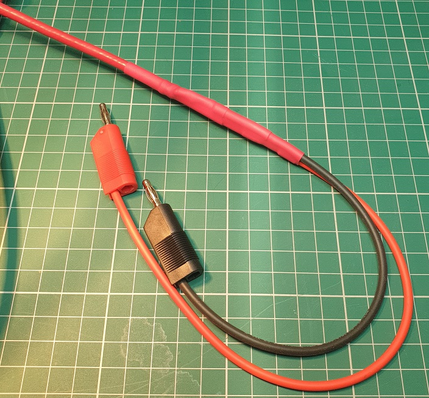Figure 10: Completed HV cable, safe to 10kV.
The cable was made by separating the coaxial braid from the HV connector which I was given when I bought the supply, soldered to a couple of lengths of high quality silicone hookup wire (Pomona 6733-2 and 6733-0, both rated for 10KV) with banana plugs for easy breakout. The extra long heatstrink provides a great deal of strain reliefe at the sheath separation join - coupled with the flexibility of the silicone leads, it is all quite robust.
The nixie was again tested with this more scientific setup, as shown in Figure 11, but alas no glow. A replacement nixie was required.
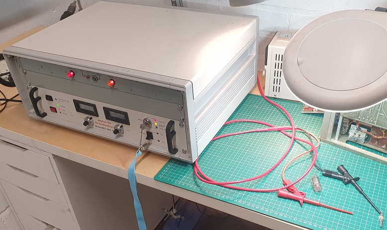Figure 11: HV test setup, using the Brandenburgh Alpha IV Model 4607 to attempt to light the ZM1172.
There were two choices when it came to finding a replacement ZM1172 - buy an equivalent part or search for an alternative replacement. I intially opted for the prior, but could only find second-hand tubes from the USA, at around $25 excluding shipping. One vendor advertised new-old stock, but it was clear from the photos that the tubes had their legs cut - so not enough to convince me to pay around $30. Instead I opted for the much cheaper IN-14 - a product of the former USSR. For £15 including shipping, it was significantly cheaper, and was certainly new-old stock. After some fiddling (I needed to loop one of the DP pins topside to a test point to fit on the PCB, and left the other floating), the IN-14 was fitted as shown in Figure 12.
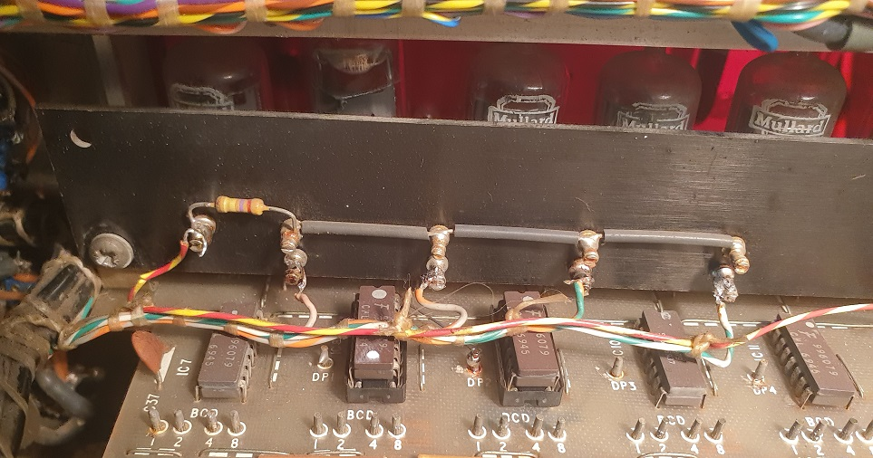Figure 12: IN-14 nixie tube fitted to the TC9B/S display board (second from left). Note the IN14 connection direct to DP2.
The TC9B/S was powered on, and lo! All six digits illuminated - see Figure 13.
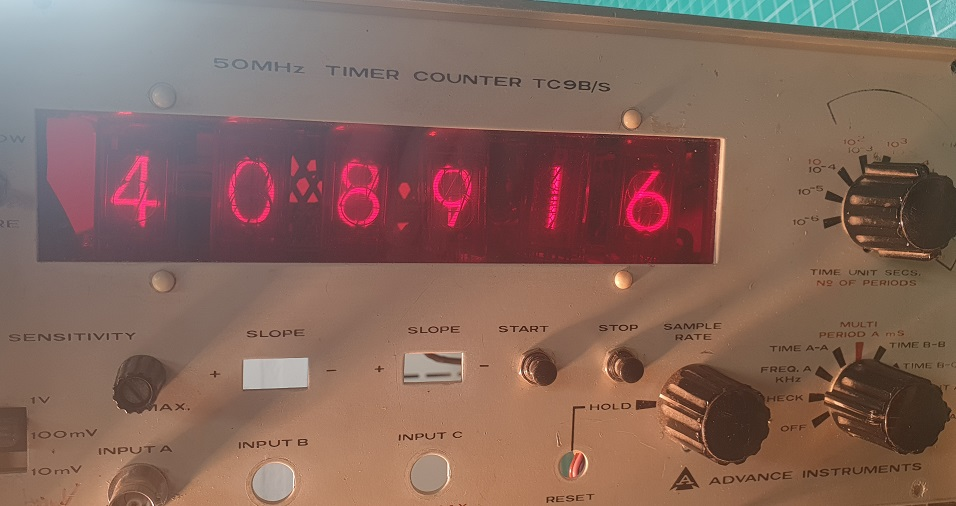Figure 13: Working TC9B/S display - digit second from right is slightly larger, but it doesn't detract much from the instrument's aesthetic, imo.
However, the unit would not count time, nor measure frequency when as signal was applied. It was apparent that something else was wrong. After some probing, I discovered that the RESET line to the JK flip flops that took the conditioned input signal was being kept high. After consulting the schematic (for the TC9 - which is subtly different to the TC9B/S, but the closest I could find a schematic for) I deduced it could be the result of something in the reset feedback path not working. Figure 14 shows the general idea of operation behind the TC9, which I think is similar to the TC9B/S.
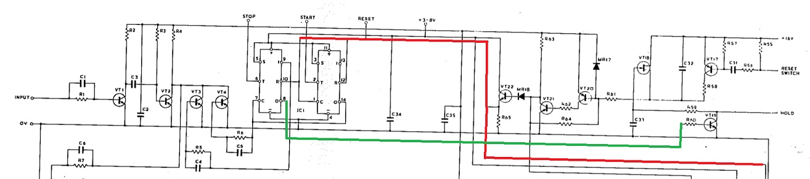Figure 14: Counting reset schematic - the reset line is highlighted in red, whilst the VT19 control is in green.
When C33 is charged, the reset line should go low - however C33 was measured and found to stay discharged. I checked the "hold" potentiometer/switch but it worked as expected, meaning the fault should lie on the reset/display PCB.
As VT19 is controlled by the output of the JK flip flops (CuL9926), in turn discharging C33, I reasoned that it would be worth testing these components out of circuit. Using my newly-accquired desoldering gun (see here), I removed both CuL9926 and constructed a test fixture, shown in operation in Figure 15.
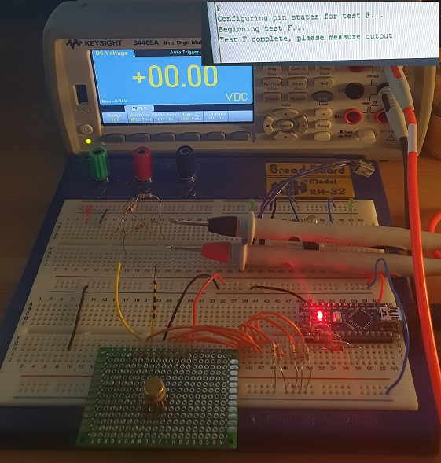Figure 15: A CuL9926 being tested using my JK flip flop test jig.
TBC...
v1.0: 15/10/2021
v1.1: 16/10/2021
v1.2: 03/01/2022